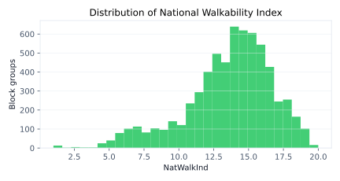
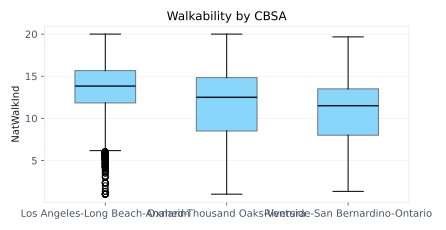
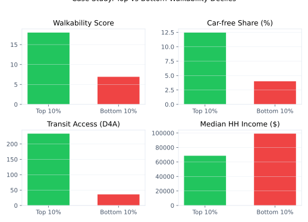
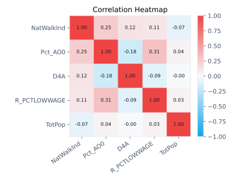

<!doctype html>
<html lang="en">
<head>
  <meta charset="UTF-8" />
  <meta name="viewport" content="width=device-width, initial-scale=1" />
  <title>Walkability in Los Angeles</title>
  <link rel="preconnect" href="https://fonts.googleapis.com">
  <link rel="preconnect" href="https://fonts.gstatic.com" crossorigin>
  <link href="https://fonts.googleapis.com/css2?family=Space+Grotesk:wght@500;600;700&family=Work+Sans:wght@400;500;600&display=swap" rel="stylesheet">
  <script src="https://cdn.tailwindcss.com"></script>
  <script>
    tailwind.config = {
      theme: {
        extend: {
          colors: {
            ink: "#0b1220",
            asphalt: "#111827",
            cement: "#f1f5f9",
            crosswalk: "#f8fafc",
            park: "#22c55e",
            transit: "#38bdf8",
            signal: "#facc15",
            brick: "#ef4444",
          },
          fontFamily: {
            display: ["Space Grotesk", "system-ui", "sans-serif"],
            body: ["Work Sans", "system-ui", "sans-serif"],
          },
          boxShadow: {
            soft: "0 18px 40px rgba(2, 6, 23, 0.12)",
          },
        },
      },
    };
  </script>
  <style>
    html {
      font-size: 15px;
    }

    body {
      font-family: "Work Sans", system-ui, sans-serif;
      background:
        radial-gradient(1200px 700px at 10% -10%, rgba(34, 197, 94, 0.18), transparent 60%),
        radial-gradient(900px 600px at 110% 20%, rgba(56, 189, 248, 0.18), transparent 55%),
        linear-gradient(180deg, #f8fafc 0%, #f1f5f9 60%, #f8fafc 100%);
      color: #0b1220;
    }

    .map-grid {
      background-image:
        linear-gradient(90deg, rgba(15, 23, 42, 0.08) 1px, transparent 1px),
        linear-gradient(0deg, rgba(15, 23, 42, 0.08) 1px, transparent 1px);
      background-size: 80px 80px;
    }

    .crosswalk-bar {
      background: repeating-linear-gradient(90deg, #f8fafc 0 18px, #111827 18px 34px);
    }

    .route-dash {
      background: repeating-linear-gradient(90deg, #facc15 0 16px, transparent 16px 28px);
    }

    .glow-node {
      box-shadow: 0 0 0 6px rgba(34, 197, 94, 0.12), 0 0 22px rgba(34, 197, 94, 0.35);
    }

    .float-card {
      animation: floatCard 10s ease-in-out infinite alternate;
    }

    @keyframes floatCard {
      0% { transform: translateY(0); }
      100% { transform: translateY(-8px); }
    }

    @media (prefers-reduced-motion: reduce) {
      .float-card { animation: none; }
    }
  </style>
</head>
<body class="min-h-screen">
  <div id="root"></div>

  <script src="https://unpkg.com/react@18/umd/react.production.min.js"></script>
  <script src="https://unpkg.com/react-dom@18/umd/react-dom.production.min.js"></script>
  <script src="https://unpkg.com/@babel/standalone/babel.min.js"></script>

  <script type="text/babel">
    const { useEffect, useMemo, useState } = React;

    const navItems = [
      { id: "home", label: "Home" },
      { id: "data", label: "Data" },
      { id: "narrative", label: "Narrative" },
      { id: "case-study", label: "Case Study" },
      { id: "methods", label: "Methods" },
      { id: "team", label: "Team" },
      { id: "resources", label: "Resources" },
    ];

    const storySteps = [
      {
        id: "q1",
        title: "Question 1: Where are the highest and lowest walkability scores?",
        body:
          "We map NatWalkInd across the LA region to see how walkability clusters across block groups.",
        image: "images/walkability_map.png",
        alt: "Walkability index map for the LA region",
        caption: "Figure 1: National Walkability Index map (LA metro block groups)",
      },
      {
        id: "q2",
        title: "Question 2: Are car-free households matched by transit access?",
        body:
          "We plot car-free household share (Pct_AO0) against transit access (D4A). The trend line highlights the overall relationship across block groups.",
        image: "images/carfree_vs_transit.svg",
        alt: "Car-free households vs transit access scatter",
        caption: "Figure 2: Car-free households vs transit access",
      },
      {
        id: "q3",
        title: "Question 3: Does low-wage share explain walkability?",
        body:
          "We test whether low-wage share (R_PCTLOWWAGE) aligns with walkability scores. This helps separate income effects from built-environment effects.",
        image: "images/lowwage_vs_walkability.svg",
        alt: "Low-wage share vs walkability scatter",
        caption: "Figure 3: Low-wage share vs walkability",
      },
    ];

    const dataSources = [
      {
        name: "EPA Smart Location Database (SLD)",
        detail: "Block-group walkability index and built-environment measures.",
      },
      {
        name: "Census / ACS 2019",
        detail: "Population, income, and household context joined to SLD geographies.",
      },
      {
        name: "Transit access (GTFS)",
        detail: "Transit stop proximity and service access inputs inside SLD.",
      },
      {
        name: "LEHD employment",
        detail: "Job density and employment mix used in walkability scoring.",
      },
    ];

    const toolList = [
      {
        name: "Tableau",
        reason: "Interactive dashboards and quick regional comparisons.",
        color: "border-sky-200 bg-sky-50",
      },
      {
        name: "Python",
        reason: "Cleaning, joins, statistics, and repeatable charts.",
        color: "border-emerald-200 bg-emerald-50",
      },
      {
        name: "ArcGIS",
        reason: "Geographic mapping and boundary work.",
        color: "border-amber-200 bg-amber-50",
      },
    ];


    function useScrollProgress() {
      const [progress, setProgress] = useState(0);
      useEffect(() => {
        const onScroll = () => {
          const doc = document.documentElement;
          const total = doc.scrollHeight - doc.clientHeight;
          const pct = total > 0 ? (doc.scrollTop / total) * 100 : 0;
          setProgress(pct);
        };
        onScroll();
        window.addEventListener("scroll", onScroll, { passive: true });
        return () => window.removeEventListener("scroll", onScroll);
      }, []);
      return progress;
    }

    function useActiveSection(sectionIds) {
      const [active, setActive] = useState(sectionIds[0]);
      useEffect(() => {
        const observer = new IntersectionObserver(
          (entries) => {
            entries.forEach((entry) => {
              if (entry.isIntersecting) setActive(entry.target.id);
            });
          },
          { rootMargin: "-40% 0px -50% 0px" }
        );
        sectionIds.forEach((id) => {
          const el = document.getElementById(id);
          if (el) observer.observe(el);
        });
        return () => observer.disconnect();
      }, [sectionIds]);
      return active;
    }

    function App() {
      const sectionIds = useMemo(() => navItems.map((item) => item.id), []);
      const progress = useScrollProgress();
      const active = useActiveSection(sectionIds);

      return (
        <div className="map-grid">
          <div
            className="fixed top-0 left-0 h-1 bg-park z-50"
            style={{ width: `${progress}%` }}
          />

          <header className="sticky top-0 z-40 bg-white/80 backdrop-blur border-b border-slate-200">
            <div className="max-w-6xl mx-auto px-4 py-4 flex flex-wrap items-center gap-4 justify-between">
              <div className="flex items-center gap-3">
                <div className="w-10 h-10 rounded-md bg-asphalt text-crosswalk flex items-center justify-center font-display text-lg">
                  LA
                </div>
                <div>
                  <div className="font-display text-lg">Walkability in Los Angeles</div>
                  <div className="text-xs text-slate-500">Built environment, equity, and access</div>
                </div>
              </div>
              <nav className="flex flex-wrap gap-2 text-sm font-medium">
                {navItems.map((item) => (
                  <a
                    key={item.id}
                    href={`#${item.id}`}
                    className={`px-2.5 py-1.5 rounded-md border transition ${
                      active === item.id
                        ? "bg-asphalt text-crosswalk border-asphalt"
                        : "bg-white text-slate-600 border-slate-200 hover:border-asphalt"
                    }`}
                  >
                    {item.label}
                  </a>
                ))}
              </nav>
            </div>
          </header>

          <main className="max-w-6xl mx-auto px-4 pb-20">
            <section id="home" className="pt-10 pb-8">
              <div className="grid lg:grid-cols-12 gap-8 items-center">
                <div className="lg:col-span-7 space-y-6">
                  <div className="inline-flex items-center gap-2 text-xs uppercase tracking-[0.2em] text-slate-500">
                    <span className="w-8 h-0.5 bg-slate-300"></span>
                    Project narrative
                  </div>
                  <h1 className="font-display text-3xl md:text-4xl text-ink">
                    Walkability is not evenly distributed. This project maps who benefits, and why.
                  </h1>
                  <p className="text-slate-600 text-lg">
                    We analyze the EPA Smart Location Database with Greater Los Angeles regional context to
                    understand how infrastructure, history, and policy shape access to safe, walkable streets.
                  </p>
                  <div className="flex flex-wrap gap-3">
                    <a
                      href="#narrative"
                      className="px-4 py-2.5 rounded-md bg-asphalt text-crosswalk font-semibold shadow-soft"
                    >
                      Read the narrative
                    </a>
                    <a
                      href="#data"
                      className="px-4 py-2.5 rounded-md border border-slate-300 text-slate-700 font-semibold"
                    >
                      View the data
                    </a>
                  </div>
                  <div className="flex flex-wrap gap-3 text-sm text-slate-600">
                    <span className="px-2.5 py-1 rounded-md bg-white border border-slate-200">LA metro focus</span>
                    <span className="px-2.5 py-1 rounded-md bg-white border border-slate-200">Census block groups</span>
                    <span className="px-2.5 py-1 rounded-md bg-white border border-slate-200">Equity lens</span>
                  </div>
                  <div className="grid grid-cols-2 md:grid-cols-4 gap-3 text-sm">
                    <div className="bg-white border border-slate-200 rounded p-3 shadow-soft">
                      <div className="text-xs uppercase tracking-[0.2em] text-slate-400">Block groups</div>
                      <div className="font-display text-lg">10,800</div>
                    </div>
                    <div className="bg-white border border-slate-200 rounded p-3 shadow-soft">
                      <div className="text-xs uppercase tracking-[0.2em] text-slate-400">Mean walkability</div>
                      <div className="font-display text-lg">12.9</div>
                    </div>
                    <div className="bg-white border border-slate-200 rounded p-3 shadow-soft">
                      <div className="text-xs uppercase tracking-[0.2em] text-slate-400">Car-free share</div>
                      <div className="font-display text-lg">6.8%</div>
                    </div>
                    <div className="bg-white border border-slate-200 rounded p-3 shadow-soft">
                      <div className="text-xs uppercase tracking-[0.2em] text-slate-400">Transit access</div>
                      <div className="font-display text-lg">373.9</div>
                    </div>
                  </div>
                </div>
                <div className="lg:col-span-5">
                  <div className="bg-white border border-slate-200 rounded shadow-soft p-6 space-y-4 float-card">
                    <div className="flex items-center justify-between">
                      <h2 className="font-display text-xl">Walkability Index Legend</h2>
                      <span className="text-xs uppercase tracking-[0.2em] text-slate-400">1 to 20</span>
                    </div>
                    <div className="h-3 rounded-md bg-gradient-to-r from-slate-200 via-emerald-200 to-emerald-600"></div>
                    <div className="flex justify-between text-xs text-slate-500">
                      <span>Lower walkability</span>
                      <span>Higher walkability</span>
                    </div>
                    <div className="border border-slate-200 rounded-md p-4">
                      <div className="text-xs uppercase tracking-[0.2em] text-slate-400">Key questions</div>
                      <ul className="mt-3 space-y-2 text-sm text-slate-600">
                        <li>Where are the lowest scoring neighborhoods?</li>
                        <li>Who lives in those places?</li>
                        <li>How did historical planning create these patterns?</li>
                      </ul>
                    </div>
                  </div>
                </div>
              </div>
              <div className="mt-8 h-2 rounded-md crosswalk-bar"></div>
            </section>

            <section id="data" className="py-8">
              <div className="flex flex-wrap items-center justify-between gap-4">
                <h2 className="font-display text-2xl">Data</h2>
                <div className="text-xs uppercase tracking-[0.2em] text-slate-400">Selecting our sources</div>
              </div>
              <p className="mt-3 text-slate-600 max-w-3xl">
                We prioritized datasets that capture walkability, transit access, and neighborhood context
                at fine geographic scales. These sources allow consistent joins to Census geographies and
                support equity-focused analysis.
              </p>
              <div className="mt-6 grid md:grid-cols-2 gap-4">
                {dataSources.map((source) => (
                  <div key={source.name} className="bg-white border border-slate-200 rounded p-5 shadow-soft">
                    <div className="flex items-start gap-3">
                      <div className="w-3 h-3 rounded-md bg-park mt-2 glow-node"></div>
                      <div>
                        <div className="font-display text-lg">{source.name}</div>
                        <div className="text-sm text-slate-600 mt-1">{source.detail}</div>
                      </div>
                    </div>
                  </div>
                ))}
              </div>
              <div className="mt-6 grid md:grid-cols-2 gap-4">
                <div className="h-44 rounded-md border border-slate-200 bg-slate-50 flex items-center justify-center p-3">
                  
                </div>
                <div className="h-44 rounded-md border border-slate-200 bg-slate-50 flex items-center justify-center p-3">
                  
                </div>
              </div>
              <div className="mt-2 text-xs text-slate-500">
                Figure A: Distribution of National Walkability Index. Figure B: Walkability by CBSA (boxplot).
              </div>
            </section>

            <section id="narrative" className="py-8">
              <div className="flex flex-wrap items-center justify-between gap-4">
                <h2 className="font-display text-2xl">Narrative</h2>
                <div className="text-xs uppercase tracking-[0.2em] text-slate-400">Story route</div>
              </div>
              <div className="mt-6 grid lg:grid-cols-12 gap-8">
                <div className="lg:col-span-4">
                  <div className="sticky top-24 bg-white border border-slate-200 rounded p-5 shadow-soft">
                    <div className="flex items-center justify-between">
                      <div className="text-xs uppercase tracking-[0.2em] text-slate-400">Route map</div>
                      <div className="h-2 w-16 rounded-md route-dash"></div>
                    </div>
                    <ol className="mt-4 space-y-4 text-sm text-slate-600">
                      {storySteps.map((step, index) => (
                        <li key={step.id} className="flex gap-3">
                          <span className="w-7 h-7 rounded-md bg-asphalt text-crosswalk flex items-center justify-center text-xs font-semibold">
                            {index + 1}
                          </span>
                          <span>{step.title}</span>
                        </li>
                      ))}
                    </ol>
                  </div>
                </div>
                <div className="lg:col-span-8 space-y-6">
                  {storySteps.map((step) => (
                    <article key={step.id} className="bg-white border border-slate-200 rounded p-6 shadow-soft">
                      <h3 className="font-display text-xl">{step.title}</h3>
                      <p className="mt-3 text-slate-600">{step.body}</p>
                      <div className="mt-5 h-48 rounded-md border border-slate-200 bg-slate-50 flex items-center justify-center p-3">
                        
                      </div>
                      <div className="mt-2 text-xs text-slate-500">{step.caption}</div>
                    </article>
                  ))}
                </div>
              </div>
            </section>

            <section id="case-study" className="py-8">
              <div className="flex flex-wrap items-center justify-between gap-4">
                <h2 className="font-display text-2xl">Case Study</h2>
                <div className="text-xs uppercase tracking-[0.2em] text-slate-400">Neighborhood comparison</div>
              </div>
              <div className="mt-6 grid lg:grid-cols-2 gap-6">
                <div className="bg-white border border-slate-200 rounded p-6 shadow-soft">
                  <h3 className="font-display text-xl">High Walkability (Top 10%)</h3>
                  <p className="mt-3 text-slate-600">
                    1,157 block groups average a walkability score of 17.8 with a 10.7% car-free household share.
                    Transit access (D4A) averages 269, while median household income averages about $68.9k.
                  </p>
                </div>
                <div className="bg-white border border-slate-200 rounded p-6 shadow-soft">
                  <h3 className="font-display text-xl">Low Walkability (Bottom 10%)</h3>
                  <p className="mt-3 text-slate-600">
                    1,139 block groups average a walkability score of 5.9 with a 3.1% car-free household share.
                    Transit access (D4A) averages 4.7, and median household income averages about $97.5k.
                  </p>
                </div>
              </div>
              <div className="mt-6 h-64 rounded-md border border-slate-200 bg-slate-50 flex items-center justify-center p-3">
                
              </div>
              <div className="mt-2 text-xs text-slate-500">
                Figure 4: Top vs bottom walkability deciles across key variables
              </div>
              <p className="mt-4 text-sm text-slate-600">
                We selected the top and bottom deciles to maximize contrast while keeping enough block groups in each
                group for stable averages.
              </p>
            </section>

            <section id="methods" className="py-8">
              <div className="flex flex-wrap items-center justify-between gap-4">
                <h2 className="font-display text-2xl">Methods</h2>
                <div className="text-xs uppercase tracking-[0.2em] text-slate-400">Processing and limitations</div>
              </div>
              <div className="mt-6 grid lg:grid-cols-2 gap-6">
                <div className="bg-white border border-slate-200 rounded p-6 shadow-soft">
                  <h3 className="font-display text-xl">Why These Sources?</h3>
                  <p className="mt-3 text-slate-600">We selected sources that are transparent, replicable, and compatible with Census geographies.</p>
                  <p className="mt-4 text-sm text-slate-600">
                    The Smart Location Database provides block-group scale built-environment measures, while ACS and LEHD
                    add socioeconomic and job-density context. Transit access variables (D4A) are derived from GTFS inputs,
                    allowing a consistent GEOID-based join across sources.
                  </p>
                </div>
                <div className="bg-white border border-slate-200 rounded p-6 shadow-soft">
                  <h3 className="font-display text-xl">Silences and Limitations</h3>
                  <p className="mt-3 text-slate-600">Every dataset makes tradeoffs. We document what is missing and how it affects interpretation.</p>
                  <p className="mt-4 text-sm text-slate-600">
                    The walkability index captures proximity and built form, not sidewalk quality, safety, or perceived
                    comfort. It is a 2019 snapshot and may miss recent infrastructure changes. Block-group averages can hide
                    within-neighborhood variation, and modeled transit access does not reflect reliability or rider
                    experience.
                  </p>
                </div>
              </div>
              <div className="mt-6 bg-white border border-slate-200 rounded p-6 shadow-soft">
                <h3 className="font-display text-xl">Processing Our Data</h3>
                <p className="mt-3 text-slate-600">We cleaned, filtered, and aligned multiple sources to focus on LA metro block groups.</p>
                <p className="mt-4 text-sm text-slate-600">
                  We used Python (pandas, geopandas) to load the cleaned CSV, exclude rows missing key fields per chart,
                  compute deciles and correlations, and join block-group geometries for mapping. The provided dataset already
                  targets the Los Angeles metro counties (Los Angeles, Orange, Riverside, San Bernardino, Ventura), so we
                  kept that footprint for all summaries and visualizations.
                </p>
              </div>
              <p className="mt-5 text-sm text-slate-600">
                We summarize relationships between walkability, transit access, car-free share, low-wage share, and population with a correlation heatmap.
              </p>
              <div className="mt-3 h-48 rounded-md border border-slate-200 bg-slate-50 flex items-center justify-center p-3">
                
              </div>
              <div className="mt-2 text-xs text-slate-500">
                Figure 5: Correlation heatmap for walkability, transit access, car-free share, low-wage share, and population
              </div>
              <div className="mt-6 grid lg:grid-cols-3 gap-4">
                {toolList.map((tool) => (
                  <div key={tool.name} className={`border rounded p-5 shadow-soft ${tool.color}`}>
                    <div className="font-display text-lg">{tool.name}</div>
                    <div className="text-sm text-slate-600 mt-2">{tool.reason}</div>
                  </div>
                ))}
              </div>
              <div className="mt-6 bg-white border border-slate-200 rounded p-6 shadow-soft">
                <h3 className="font-display text-xl">Why We Processed It This Way</h3>
                <p className="mt-3 text-slate-600">
                  We chose processing steps that foreground equity questions and avoid erasing neighborhood-level variation.
                </p>
                <p className="mt-4 text-sm text-slate-600">
                  Following D&apos;Ignazio and Klein&apos;s emphasis on power in data work, we prioritize variables tied to access
                  and inequality rather than collapsing to a single citywide average. We also align with boyd and Crawford&apos;s
                  call to surface data limitations by documenting missing transit service and model-based measures alongside
                  our findings.
                </p>
              </div>
            </section>

            <section id="team" className="py-8">
              <div className="flex flex-wrap items-center justify-between gap-4">
                <h2 className="font-display text-2xl">Our Team</h2>
                <div className="text-xs uppercase tracking-[0.2em] text-slate-400">People behind the project</div>
              </div>
              <div className="mt-6 grid md:grid-cols-2 lg:grid-cols-3 gap-6">
                {[
                  {
                    name: "Sarah Johal",
                    role: "Project Manager",
                    bio: "Second-year computer science major from the Bay Area.",
                  },
                  {
                    name: "Quinn Koch",
                    role: "Visualization Specialist",
                    bio: "Fourth-year geography and statistics double major from Berkeley, CA.",
                  },
                  {
                    name: "Sunny Anand",
                    role: "Web Designer",
                    bio: "First-year computer science major from the Bay Area.",
                  },
                  { name: "(Enter Name)", role: "(Enter Role)", bio: "(Enter Bio)" },
                  { name: "(Enter Name)", role: "(Enter Role)", bio: "(Enter Bio)" },
                  { name: "(Enter Name)", role: "(Enter Role)", bio: "(Enter Bio)" },
                ].map((member) => (
                  <div key={member.name} className="bg-white border border-slate-200 rounded p-5 shadow-soft">
                    <div className="text-sm uppercase tracking-[0.2em] text-slate-400">{member.role}</div>
                    <div className="font-display text-xl mt-2">{member.name}</div>
                    <p className="mt-3 text-slate-600">{member.bio}</p>
                  </div>
                ))}
              </div>
            </section>

            <section id="resources" className="py-8">
              <div className="flex flex-wrap items-center justify-between gap-4">
                <h2 className="font-display text-2xl">Resources</h2>
                <div className="text-xs uppercase tracking-[0.2em] text-slate-400">References and acknowledgments</div>
              </div>
              <div className="mt-6 grid lg:grid-cols-2 gap-6">
                <div className="bg-white border border-slate-200 rounded p-6 shadow-soft">
                  <h3 className="font-display text-xl">Bibliography</h3>
                  <ul className="mt-4 space-y-2 text-sm text-slate-600">
                    <li>EPA Smart Location Database (2019)</li>
                    <li>U.S. Census ACS 2019 5-year estimates</li>
                    <li>LEHD LODES employment data (2019)</li>
                    <li>Spoer, Ben R., et al. “Association between Racial Residential Segregation and Walkability in 745 U.S. Cities.” Health &amp; Place, 2023.</li>
                    <li>Van Der Vlugt, Anna-Lena, et al. “Analysing the Determinants of Perceived Walkability, and Its Effects on Walking.” Transportation Research Part A, 2025.</li>
                  </ul>
                </div>
                <div className="bg-white border border-slate-200 rounded p-6 shadow-soft">
                  <h3 className="font-display text-xl">Acknowledgments</h3>
                  <p className="mt-3 text-slate-600 font-semibold">Dr. Nicholas Sabo</p>
                  <p className="mt-2 text-sm text-slate-600">
                    Thank you for guiding our research framing and for feedback on early drafts and methods.
                  </p>
                  <p className="mt-4 text-slate-600 font-semibold">Teaching Assistant</p>
                  <p className="mt-2 text-sm text-slate-600">
                    Thanks for detailed critiques on data cleaning decisions and visualization clarity throughout the term.
                  </p>
                </div>
              </div>
            </section>
          </main>

          <footer className="border-t border-slate-200 bg-white/80 backdrop-blur">
            <div className="max-w-6xl mx-auto px-4 py-6 flex flex-wrap items-center justify-between gap-4 text-sm text-slate-500">
              <span>Walkability in Los Angeles - Project site</span>
              <span>Built with React and Tailwind CSS</span>
            </div>
          </footer>
        </div>
      );
    }

    const root = ReactDOM.createRoot(document.getElementById("root"));
    root.render(<App />);
  </script>
</body>
</html>
